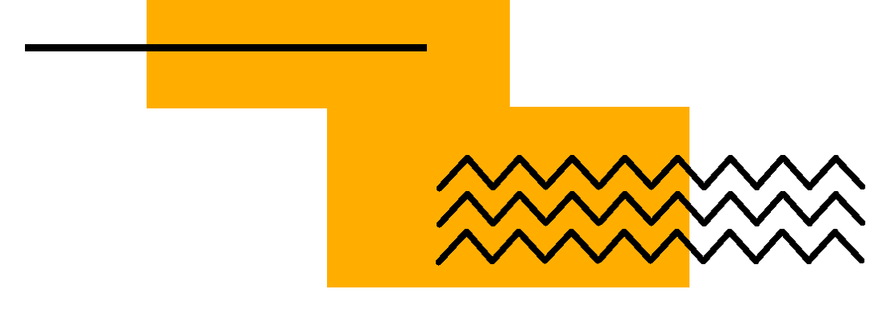
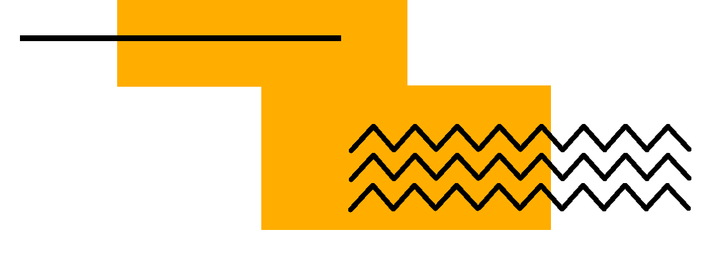
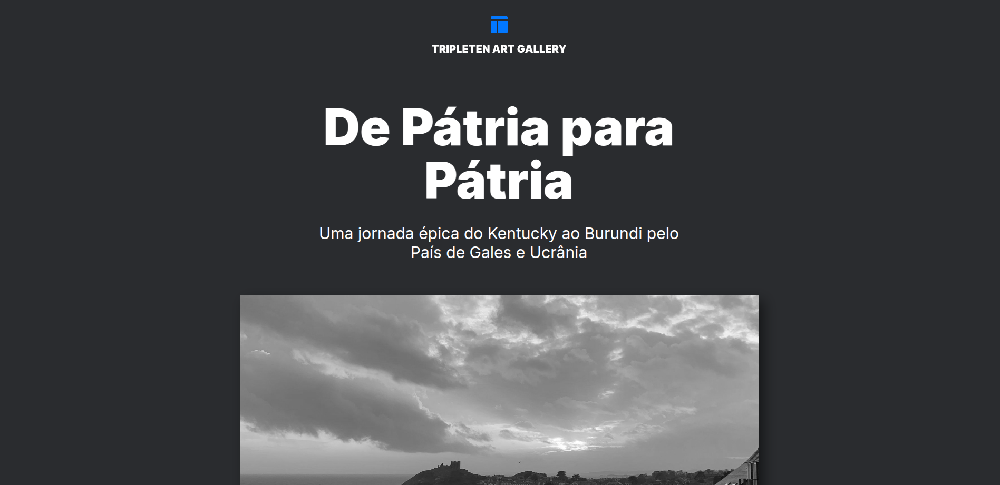
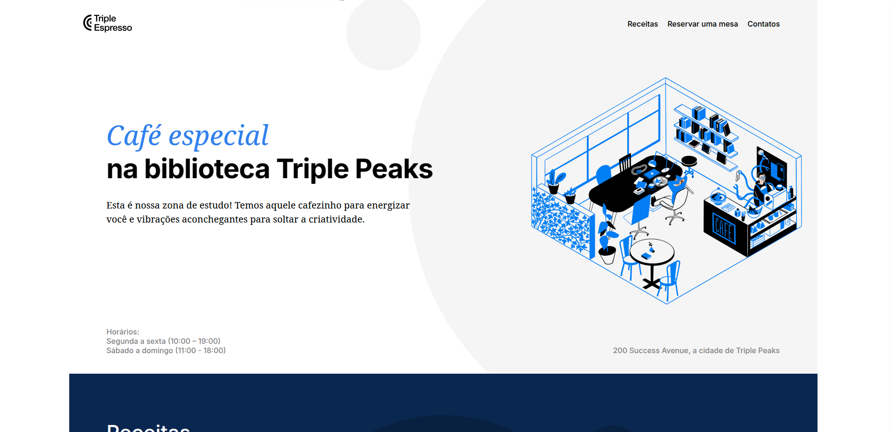
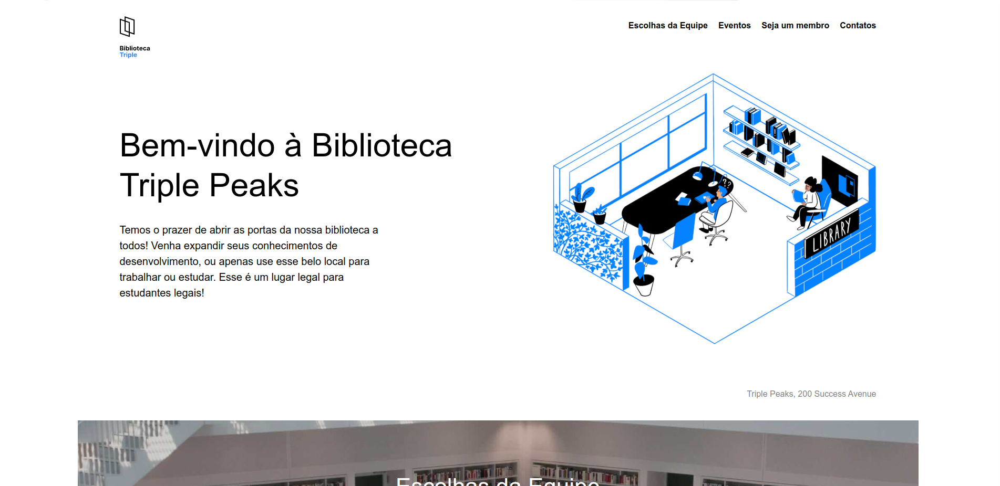
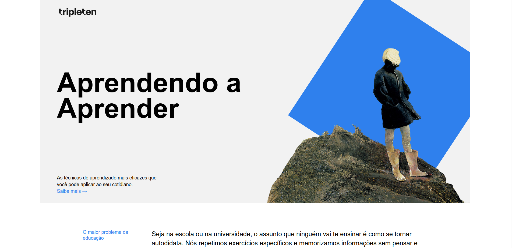

Sobre mim
Com mais de 10 anos de experiência como designer gráfico, atualmente estou focado no desenvolvimento web fullstack. Estou cursando frontend e backend no bootcamp TripleTen Brasil, um programa intensivo de 10 meses. Antes disso, concluí o curso da Dra. Angela Yu na Udemy, onde aprendi diversas tecnologias e ferramentas essenciais para o desenvolvimento web.
Combino design e código, criando interfaces modernas, responsivas e funcionais. Busco sempre aprimorar minhas habilidades e explorar novas tecnologias, garantindo soluções eficientes e bem estruturadas.
Projetos
-

Around the US - EUA Afora
Uma plataforma destinada ao usuário para adicionar, remover e curtir fotos, com um layout responsivo que se adapta a diferentes telas, utilizando unidades relativas e media queries. O JavaScript foi utilizado para as funcionalidades, com o código modularizado em classes para melhor manutenção e reutilização. Além disso, a plataforma faz o consumo de uma API para gerenciar as fotos, garantindo a comunicação entre o front-end e o back-end.
-

De Pátria para Pátria
Uma plataforma para profissionais compartilharem histórias e fotos de suas cidades natais, ajudando futuros profissionais de tecnologia a se sentirem em casa. O layout é responsivo, ajustando-se a diferentes telas por meio de unidades relativas e media queries, para manter a integridade do design.
-

Triple Espresso
Triple Espresso é uma landing page desenvolvida em HTML e CSS, contendo um menu de navegação e a descrição do café no header. O main é dividido em seções com receitas de café e a opção para reserva de mesa. O footer apresenta informações sobre as redes sociais e copyright.
-

Biblioteca Triple Peaks
Triple Peaks é uma landing page desenvolvida em HTML e CSS. Possui um menu de navegação e a descrição da biblioteca no cabeçalho. O conteúdo é dividido em seções com indicações de livros da equipe, eventos no local e informações sobre como se tornar membro. O footer apresenta o horário de funcionamento e links para as redes sociais.
-

Aprendendo a Aprender
A página Aprendendo a Aprender é um projeto extra, desenvolvido em HTML e CSS, com o uso de animações para tornar a experiência mais dinâmica. Ela é dividida em seções que apresentam diversas técnicas e metodologias de aprendizado eficazes e conta com um iframe para incorporar vídeos do YouTube.
-

TinDog
Um dos primeiros projetos que desenvolvi foi o site Tinder para Cachorros, desenvolvido utilizando HTML, CSS e Bootstrap. Ele é dividido em seções, com um botão para o app na loja, avaliação de usuário e planos de assinatura.